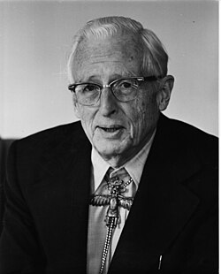

Donald Menzel
Harvard astronomer, 1901 to 1976

A Harvard astronomer and director of the Harvard College Observatory who wrote three popular books arguing that UFOs were misidentified ordinary objects or unusual atmospheric effects: Flying Saucers (1953), The World of Flying Saucers (1963) and The UFO Enigma (1977). He was a prominent skeptic concerning the reality of UFOs. 1
His colleague Dorrit Hoffleit recalled that one of his first acts as director was asking his secretary to destroy a third of the observatory's photographic plates of the sky, sight unseen. He also halted new plate-making from 1953 to 1968 as a cost-cutting measure, leaving a hole in Harvard's sky record known as the Menzel Gap. 1
The Majestic 12 papers, which the FBI concluded were fakes, list him as one of the alleged committee's designated members. 2
Open in the interactive Watcher
Related
- Flying Saucers Flying Saucers, 1953
- Majestic 12
Sources
- Donald Howard Menzel Wikipedia
- Majestic 12 Wikipedia